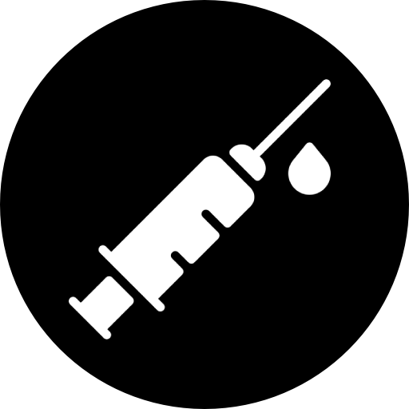
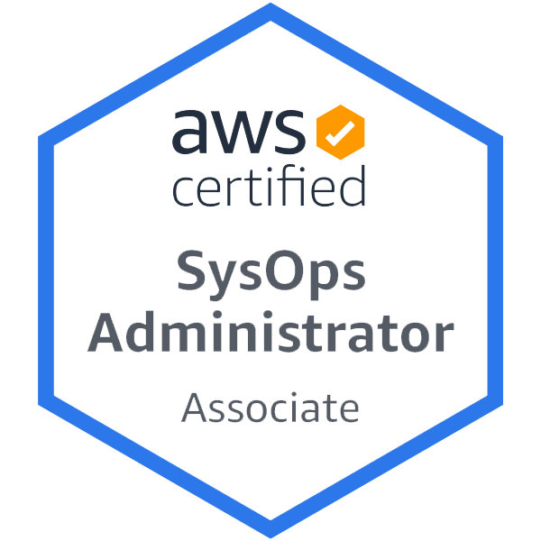
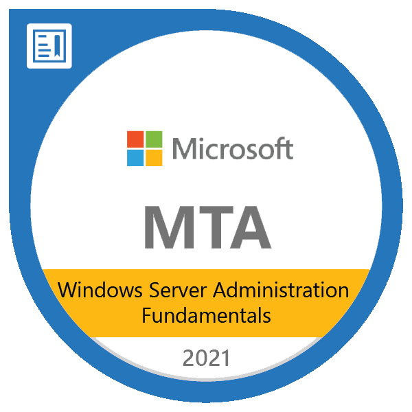

Resume
 |
Open to Relocate Currently in France |
Adrien Fiand Jr. Network & Security Engineer |
|
|  | Covid-19 Fully Vaccinated |
||
 |
FR +33 7 81 03 82 94 |
Detail-Driven & Result-Oriented professional with 2.5+ years of experience in the management of networks and "core" systems. Passionate about the design and implementation of secure & resilient infrastructure, that ensure uninterrupted operation and safeguard data, I take great pride in delivering high-quality work that meets client expectations. |
|
 |
WhatsApp +33 7 81 03 82 94 |
||
 |
E-mail fiandadrien@gmail.com |
||
 |
LinkedIn linkedin.com/in/adrien-fiand |
||
Website www.adrienfiand.net |
|||
|
Languages French - Fluent (Native Language) English - Proficient (TOEIC Score 960) Education CESI Engineering School Information Technology Master's Degree 5-year program, integrated preparatory cycle Problem Based Learning methodology : Supervised autonomous learning in groups. Skills Solutions
Network (LAN/WAN)
Infrastructure
Fast-Learner - Curious - Critical-Thinker |
Experience Jr. Network & Security Engineer | Axians (Vinci Group) - FR2022 - Now
Jr. NetSysAdmin | Freelance 40 hr/mo Blueberry Consultants - UK2021/03 - 2021/12
SysAdmin Trainee | Blueberry Consultants - UK2020/10 - 2021/02
NetAdmin Intern | Aramys Cloud Service Provider - FR 2020/01 - 2020/04
IT Technician Intern | Hospital Center Of Arras - FR2019/05 - 2019/06
Experimental Projects Home Lab - Pfsense + Sandbox server in my basement running Proxmox & GNS3. Game Server - Host a small network of Minecraft servers with plugins and proxy. Certifications HPE - Aruba ClearPass Certified, Professional [ACCP] EXP. 2026 AWS - Certified Sysops Administrator, Associate [AWS SysOps] EXP. 2024 Cisco - Certified Network Associate, Routing & Switching [CCNA R&S] EXP. 2023 Microsoft - Windows Server Administration, Fundamentals [MTA] NON EXP.


|
||